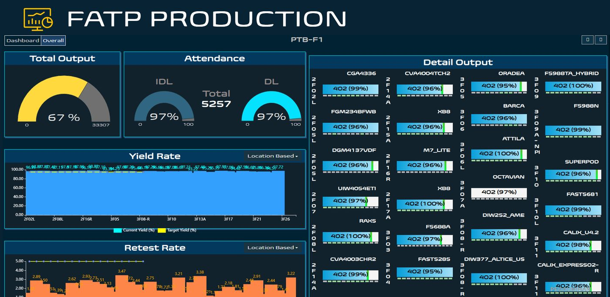
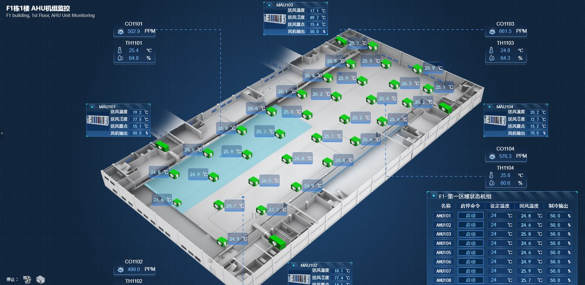
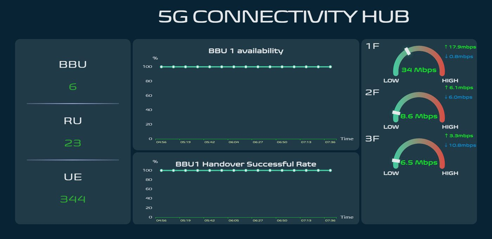
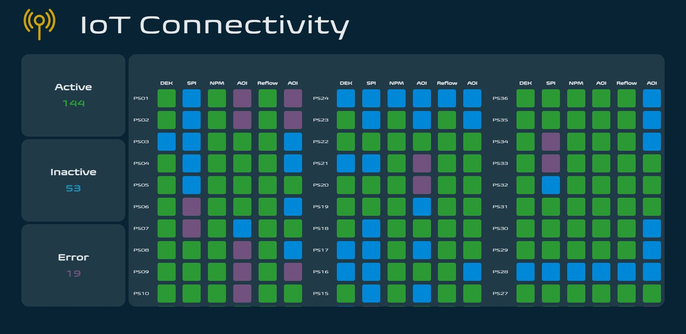
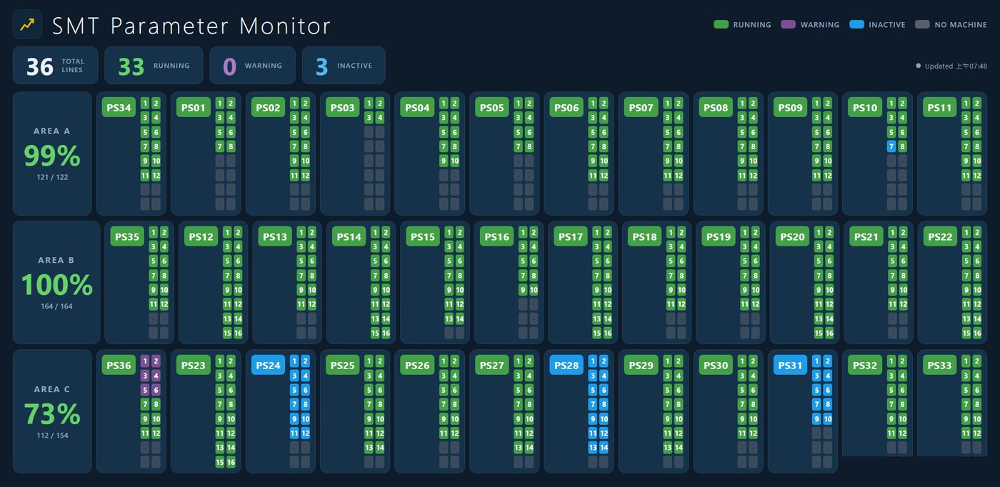
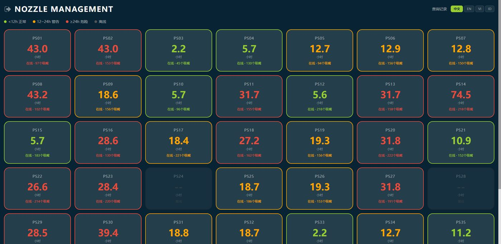
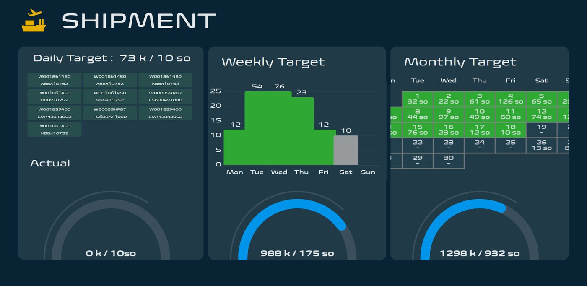
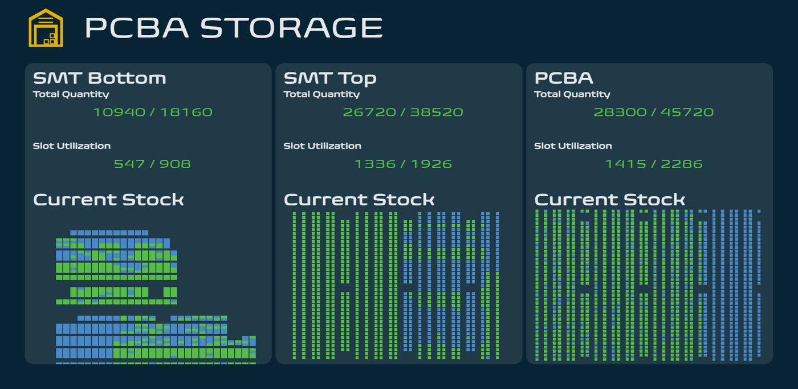
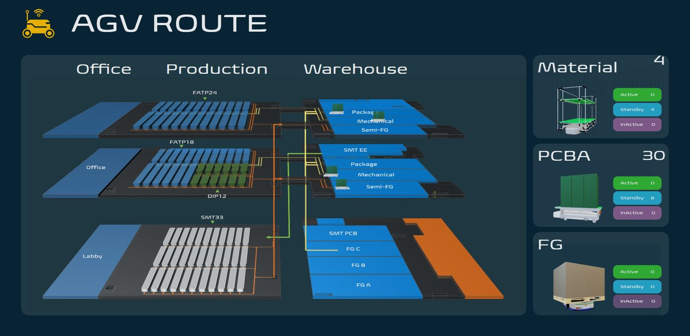

智慧工厂软件解决方案 - 从现场感知、即时监控到决策支援的全链路自研系统
团队长期驻厂开发，深谙制造业现场流程（SMT、FATP、仓储、厂务、能源、人力）。全部系统自主研发、自主维护，从需求访谈、UI/UX、前后端开发、IoT 设备对接到跨区域部署一条龙完成。系统已在印尼、越南、中国、印度等多个制造厂区上线，涵盖中文、英文、印尼语等多语言环境。
| 类别 | 涵盖领域 |
|---|---|
| 生产管理 | 产线监控、换线交接、备料/领料、异常呼叫、机台保养、参数管理 |
| 厂务管理 | 报修、仓库、资产借用、CCTV 调阅、手机权限、表单签核 |
| 看板/监控 | 生产大屏、能源九宫格、SMT 九宫格、AGV 3D、5G 专网、出货看板 |
| 人力/行政 | 工时、出勤、训练、员工查询、助理辅助、日报异常登记 |
| 公司系统 | 能源管理、空调中央监控、智能制造执行平台、流程平台、API 文件 |
| 工具 | 内部 AI、网盘、档案格式转换 |
访谈需求 → 原型 → 开发 → 上线 → 培训，全流程交付
老旧表单系统翻新为 Web/看板化，低成本快速见效
设备数据采集、跨系统串联、与甲方既有平台对接
多语言（中/英/印尼语）、多厂区平行上线与运维

出货总量、人力量能、良率趋势、重测率、数十条产线明细一屏尽览
成效：主管到现场即掌握产线健康度，决策零等待

AHU/MAU 主机 3D 楼层模型，温度、湿度、CO2 即时采样
成效：环境异常即时可视，节能调度有据可依

基地台与终端连线监控、交递成功率、各楼层速率仪表
成效：5G 覆盖与品质 24h 掌握

36 条产线设备格状即时状态（在线/离线/异常）
成效：异常机台第一时间定位，减少停线等待

全厂 36 条产线各机台参数健康度、区域良率
成效：参数日常巡检电子化，问题发现提前到发生当下

30+ 站点吸嘴使用时数分级管理（正常/警示/超期）
成效：耗材更换刚刚好，兼顾品质与成本

日/周/月目标达成、出货数量与工单明细
成效：出货达成率与交期风险即时透明

SMT 上下料与整板库存即时数量、库位使用率
成效：库存水位一眼掌握，降低呆料与缺料风险

厂区 3D 模型 + 物料运输路线与在途量，AGV 状态
成效：物流动线可视化调度，对接自动化搬运场景